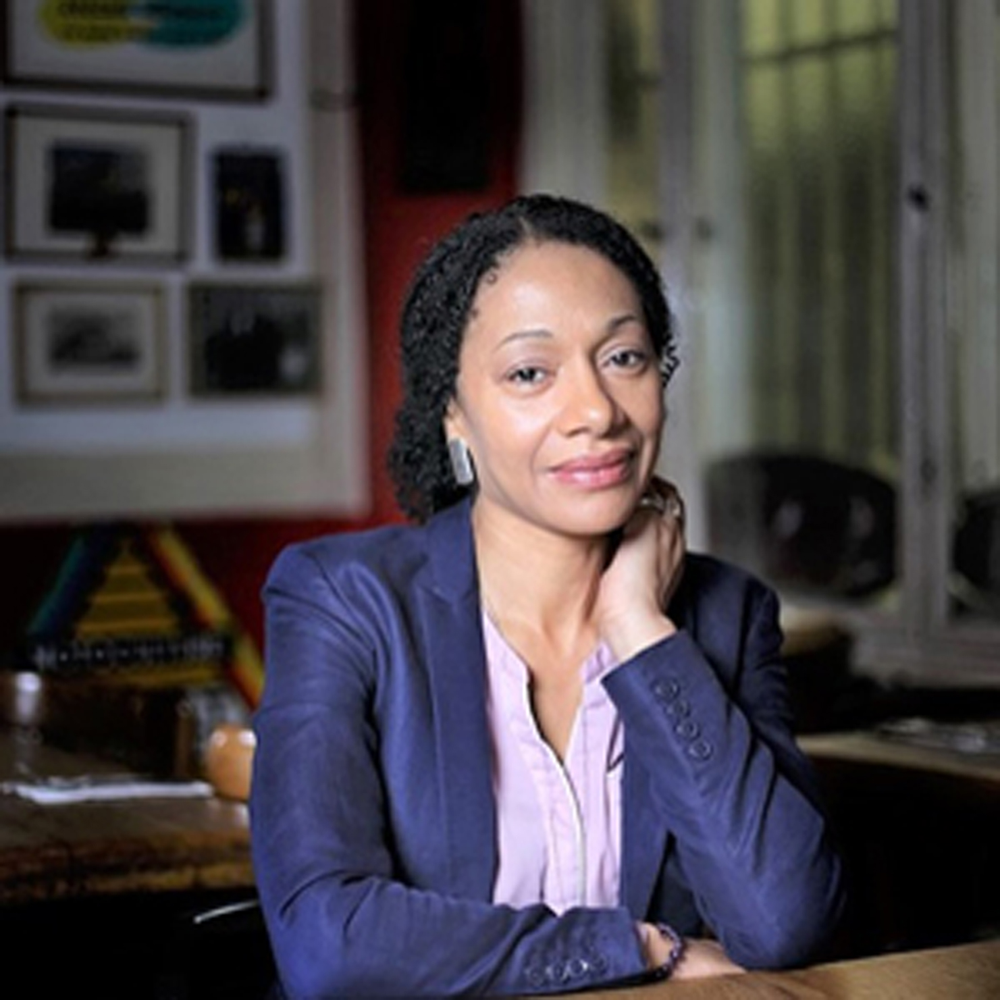

Wolf
Jaw
Zine
WOLF JAW MAGAZINE
For those who seek potent healing
and equal parts solitude and belonging.
Call for Submissions
- Payment to Accepted Poets: $100
- Deadline: September 30, 2021
- Issue: November 2021
- Title: Fighting Trim
- Instructions: Email your PDF of a maximum of 6 pages to xyzine.lit@gmail.com. Please include a cover letter in the body of the email.
- Decisions: Within six weeks of deadline
Life During Wartime Issue
- The second issue is out; check the Issues page for the link to read Winter 2021, Life During Wartime, which features the work of five poets:
- Nicholas Dertinger
- Maroula Blades
- Vanessa Scott
- Julia Vu
- Angelica Julia Davila
Interview with Maroula Blades
- How is your identity an important part of your poetry? How do you understand "identity politics"?
- As a person of colour seen by the white establishment as the “other”, it is important to reveal my identity through creative practices. Whether that be writing a poem or prose, singing and playing music or art. I cannot deny my identity, it is a feature of my heritage. An inherent part of me that provides a unique perspective on current and past events. These events led minorities to a definite disadvantage in life. History books are written from the “white gaze”, meaning the view of the white colonizers which we know to be flawed. Minority parties have always recorded their place and deeds in the world. But seldom were they taken into consideration. Because of this, the “others” must propagate their needs, aspirations, qualms, and histories. Writing is a fantastic vehicle for this. We must do it much as possible. Change must come! And if one’s fortunate to find a platform, the chronicles and messages will be published, recorded, shared, or filmed for present and future generations.
- My understanding of the term “identity politics” is that it deals with political ideologies and strategies. Significance is put on the group to which individuals perceive themselves as belonging to, corresponding to their race, gender (whether they are male or female), or sexual orientation (whether they prefer intimate relations with people of the same or a different gender).
- Do you believe we are in a new era? If so, what is this the era of?
- Yes, we’re in a new era to a certain extent, but we are still in a patriarchal age. The age of equality is blinking on the horizon. Some might consider this to be the “woke” era. But a great deal more has to happen, regarding socio-political issues, etc.
- Since the recent Me Too and Black Lives Matter movements, a vital shift is taking place in the literary field which encompasses a few more diverse voices. Women are now coming to the foreground in politics. Valid changes are being made to benefit women and children, i.e., equal pay, inclusive educational methods, employment opportunities, and providing safe working environments. Today, from an early age, teachers encourage female children to choose recreational classes that were usually reserved for boys and vice-visa. Also, the LGBT social movements have provided much-needed clarification on the needs of gay, transexual, and non-binary peoples.
- Today, in European commercials, whether it be for fashion industry, insurance companies, public transport, banks, etc., many of the models are multicultural. This is a positive step. Earlier, more often than not, minorities occupied demeaning roles in the media.
- Tell us about embodying the voice of Harriet Tubman in "Flight."
- It was important to me to embody the voice of Harriet Tubman in “Flight” as she was a brave, remarkable woman. She seized her own freedom and then she guided hundreds of African American slaves to theirs, including her brothers. Harriet Tubman is called “The Moses of Her People” because like Moses she helped people escape from captivity.
- For inspiration, I read an online volume of “Scenes in the Life of Harriet Tubman” by Sarah H. Bradford, issued by W.J. Moses, printer, 1869. And I researched the way Southern Black slaves spoke during that dark period. I wanted the expression in “Flight” to be authentic, hence the use of dialect. It was also enjoyable to write about Harriet Tubman, a heroine of mine, because we seldom address the accomplishments of black women in history as their roles are often diminished or even erased.
- How do you like your allies?
- I like my allies to come from diverse backgrounds, to be like-minded and accepting of others. Egos must remain outside in the pen. It would serve us better if we could all initiate wholesome dialogues. White allies should not ask people of colour to explain current and past events associated with racial tension. For it causes discomfort and may trigger unpleasant feelings and memories. They should have the insight to find ways that will educate themselves on these issues. It would be supportive if they shared the knowledge gained with other white allies. Nowadays, there are many online forums, articles and movements that address race- related topics. For example, the ongoing discussions about the torn down statues which represent white racial supremacy. As well as the defacing and removal of the Columbus statues. He is accused of the genocide of indigenous people.
- Maroula Blades, one of five poets published in Wolf Jaw's 2021 Life During Wartime issue, is an Afro-British multifaceted artist living in Berlin. She was nominated for the Amadeu Antonio Prize 2019 for her educational multimedia project “Fringe”. The project was supported by the Swiss Jan Michalski Foundation for Literature. She was the first runner-up in the 2018 Tony Quagliano International Poetry Award, and the winner of Erbacce Poetry Prize 2012. Works were published in The Caribbean Writer, Thrice Fiction, The Freshwater Review, Words with Jam, Midnight & Indigo, Abridged, The London Reader, Stories of Music Vol. 2, So It Goes, Newfound Journal, Harpy Hybrid Review and by Peepal Tree Press among others. Regularly, Ms. Blades gives bilingual (English & German) poetry workshops in Berlin schools and high schools. Her multimedia projects have been presented at many international literary festivals in Germany. Chapeltown Books (UK) has recently released her flash fiction collection “The World in an Eye”, available on Amazon and Barnes & Noble.


Mindfulness Talks for Kids
Wolf Jaw Magazine Founder Emily Lagattolla, a literature and math teacher who has taught in schools in Illinois and Mexico, gives talks at schools and other organizations about mindfulness, a stress-reduction technique from the Buddhist tradition. Emily has been developing her meditation practice at Blue Lotus Temple in Woodstock, IL since 2018. The 40-minute talk is geared towards elementary school children and entitled "The Logic of Accepting What is." It is adaptable for other audiences.
Contact
xyzine.lit@gmail.com